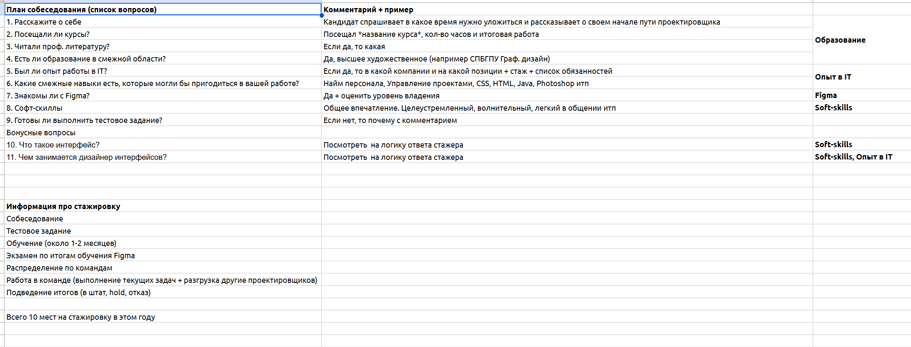
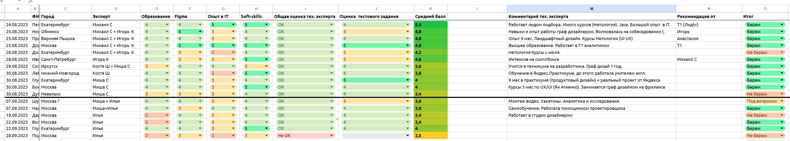
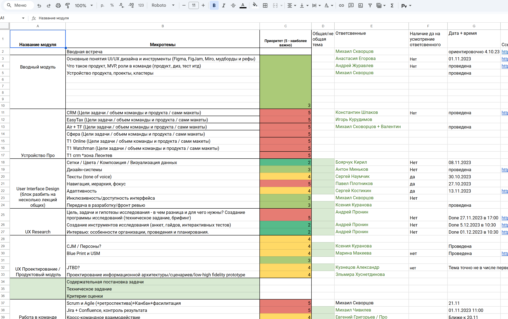
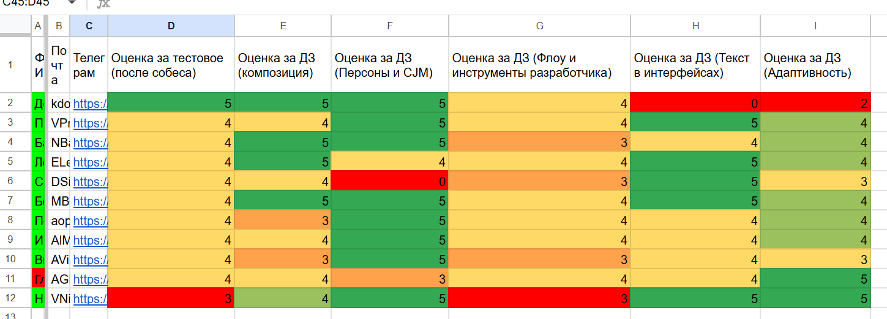

Составил единый опросник для собеседований, чтобы обеспечить равные условия отбора: все кандидаты отвечали на одинаковые вопросы, проходили сопоставимую оценку и получали тестовое задание.

Организовал трёхмесячную стажировку для начинающих дизайнеров в НОТА Т1: собрал группу из 10 участников, подготовил структуру интенсива и систему оценки начальных и итоговых навыков стажёров.
Выстроить внутренний механизм роста начинающих дизайнеров: от входной диагностики и обучения до итоговой оценки готовности к реальным продуктовым задачам.
Стажировка должна была не просто закрыть формат интенсива, а помочь вырастить новых junior-специалистов для дизайн-команды и создать повторяемую модель подготовки кадров внутри компании.
Составил единый опросник для собеседований, чтобы обеспечить равные условия отбора: все кандидаты отвечали на одинаковые вопросы, проходили сопоставимую оценку и получали тестовое задание.

После собеседований, тестовой задачи и оценки кандидатов со стороны дизайн-лидов я сформировал единую таблицу с итоговыми средними баллами и отсортировал участников по результату — от самого высокого к самому низкому. По итогам отбора была определена проходная граница: 10 кандидатов с наивысшими оценками прошли в следующий этап стажировки.

Началось обучение новых стажёров: я составил программу лекций, распределил темы и привлёк сотрудников компании к проведению отдельных занятий. Каждая теоретическая часть закреплялась практическим заданием, по которому стажёры получали оценку и обратную связь.

В результате я собрал единую таблицу со всеми оценками, динамикой и итоговыми результатами стажёров. На тот момент в компании была высокая потребность в новых кадрах, поэтому по итогам программы все участники стажировки были успешно трудоустроены.

Pass rate 0%
10 из 10 стажёров успешно сдали аттестационное задание
Retention rate 0%
Все стажеры успешно закрепились в компании и отработали не менее года
01 Открыл подбор и вместе с hr отсмотрел более 1000 резюме
02 Отобрал 10 человек
03 Подготовил структуру интенсива
04 Провел вместе с коллегами более 18 лекций
05 Отсмотрел более 50 выполненных практических заданий
06 Провел итоговую аттестацию
07 Аллоцировал стажеров к их кураторам на проекты